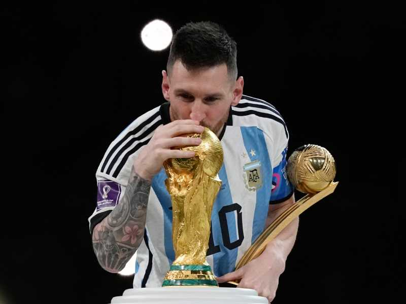

Lionel Andrés Messi Cuccittini conocido como Leo Messi, nació el 24 de junio de 1987 en la ciudad de rosario. es un futbolista argentino que juega como delantero o centrocampista. Jugador histórico del Fútbol Club Barcelona, al que estuvo ligado veinte años, desde 2021 integra el plantel del Paris Saint-Germain de la Ligue 1 de Francia.
Como internacional argentino, ha representado a su país en catorce torneos mayores. A nivel juvenil, en 2005 participó con la selección sub-20 en el Sudamericano de Colombia y ganó la Copa Mundial de Países Bajos, torneo en el que finalizó como mejor jugador y máximo goleador y, con la sub-23, recibió la medalla de oro en los Juegos Olímpicos de 2008. Después de debutar en la selección mayor en agosto de 2005, en el Mundial de Alemania 2006 se convirtió en el argentino más joven en jugar y en marcar en un mundial. Al año siguiente, en la Copa América, fue nombrado mejor jugador joven del torneo. Como capitán desde agosto de 2011, llegó con su equipo a las finales del Mundial de Brasil 2014, de la Copa América 2015 y de la Copa América Centenario, además de ganar la Copa América 2021 ante Brasil en el Maracaná y, en 2022, la Finalissima frente a Italia en Wembley y el Mundial de Catar contra Francia en el estadio Lusail.
Messi ha conquistado un total de 42 títulos oficiales a lo largo de su carrera: 35 con el FC Barcelona, dos con el PSG, tres con la selección argentina, uno con la selección argentina sub-20 y otro con la sub-23
| Estatura | 1,69 |
| Peso corporal | 72 kg |
| Edad | 35 años |
| Hijos | Thiago, Mateo, Ciro |
| Esposa | Antonela Roccuzzo |
| Padres de messi | Jorge messi y Celia Maria Cuccittini |